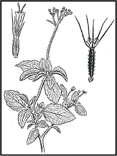

Ageratum
conyzoides Linn.
----- Taxonomic Details

----- Correct Name
----- Classification
----- Synonyms
----- Common Names
Other Biological Details
----- Habit and Habitat
----- Diagnostic Features
----- Reproductive Biology
---------- Breeding System
---------- Phenology
---------- Pollinators
---------- Seed Biology
----------Seed Germination
------Cultivation
----- Major
Pests and Diseases
Economic Potential and Uses
----- Parts Used
----- Uses
----- Harvesting Practices
----- Produce and Products
----- Chemistry
----- Processing Techniques
----- Other uses
----- Economic Potential to the Country
----- Export Potential
Miscellaneous Information
Literature
Taxonomic Details
Correct Name
: Ageratum conyzoides L.
Family :Asteraceae
Synonyms :A. album Stend; A. caeruleum
Hort. ex. Poir.; A. coeruleum Desf.; A. cordifolium Roxb.; A.
hirsutum Lam.; A. humile Salisb.; A. latifolium Car.; A.
maritimum H.B.K.; A. mexicanum Sims.; A. obtusifolium Lam.;
A. odoratum Vilm. and Cacalia mentrasto Vell. (Jaccoud 1961).
Common Names : Catinga de Bode, Mexican ageratum,
Erva de Sao Joao,
Rompesaraguelo, Aru batu, Bandotan, Berokan, Rumput tahi ayam, Wedusan
English: Goat weed
Hindi: Ajgondha, Bhakumbar, Oouchunti, Visadodi
Tamil: Pumpillu, Pumppillu, Pumpullu
Kannada: Nayitulasi
Bengali: Dochunty, Dochuti, Goat weed, Uchunti
Malayalam: Appa, Appa grass, Kattappa, Murayampacha, Muriyan pacca, Murynpacha,
Sarhand,Sianggit, Tahi ayam, Tombok jantan
Marathi: Ghaneraosadi, Osadi,Osadi, Sahadevi
Back to Top
Other Biological Details
HABIT & HABITAT
Ageratum conyzoides is an erect, herbaceous annual, 30 to 80 cm tall;
stems are covered with fine white hairs, leaves are opposite, pubescent with
long petioles and include glandular trichomes.
Ageratum ranges from Southeastern North America
to Central America, but the center of origin is in Central America and the Caribbean.
Most taxa are found in Mexico, Central America, the Caribbean, and Florida.
Ageratum conyzoides now is found in several countries in tropical and sub-tropical
regions, including Brazil.
Generally it can be seen all along edges of forests,
along slopes of ghats, Coastal areas, Cultivated areas, Cultivated fields, Cultivated
fields and Plains, Damp forests, damp places, degraded areas, forest edges,
forest undergrowth, Forests, Gardens, Gardens and Roadsides, Ghats, Hill forests,
Hill slopes, Hilly region, Marshy Areas, Moist localities, Moist shady places,Open
areas, open forest, Plains, plains and hills, river-stream-canal banks, Road
sides, Rock crevices, Shady areas, Shady habitat, Stream beds, Undergrowth,
Villages, waste land, Wet habitat and wet land cultivation.
BioticZone: Deccan Plateau, Himalaya, Hindukush himalaya, Konkan plain, Pantropical,
Tropics, West Coast and Western Ghats.
Availability
:
Misc: Ahobilam, akeri, Along water channels, ambolighat, Anmod,
Banglibetta-Devarayanadurga,
Bank of Damanganga, Near Kamcha, Bedubgad, Bellary-Hospet Road, bhairy pathar,
bhedhshi, Bombay presidency, Camp Shed Surrounding, Cargao, Chelama, Chikballapur-Bagepalli
Road, Corbett National Park, Dhamtari, Diguvametta, fort area, Garampani, Gir
forest near Sasangir, Kankai, Junwania etc., Girnar hill,hewale, Hollong,
Jaldapara,
Jogimatti (State Forest), Junagadh in riverbeds& Forest college grounds,
Kabirchabutra, Khora forest, Kileshwar on Barda hills, Kodaikanal, kodaikanal (coimbatore),
Mahaballeshwar, Mahad, Manasagangotri, Manchiri, Nilambur, mangaon
forest, Marconahalli-Kunigal Road, Marmugoa, Matheran, Medshi, most districts,Mount
Abu,Murud,Namadachilume Forest Rest House Vicinity,Nampong forest,NAMDAPHA,
Narsapur,Narsingi,Nedumkayam, Nilambur, Ootacamund, Patur, phondaghat, porvorim,
Raipur, Rajhara Dhalli, Ram niwas garden, Regional Research Station, Brahmavar,
Reserve forest, Sanapur, satara, Saurashtra, Sawarna, Shahjahan garden, Silent
Valley, Sindhoni forest, Taj nursery, Trimbak, Trombay, Tumkur-Chikballapur
Road, Umarda forest nursery, vagiri, Vani, Vaniampuzha, Nilambur, vengurla,
Wadarhatti, Forest Nursery, Waghadi nadi banks, Walayar forest, World and
Yelebara,
Country: America, India, Pan-Tropical, S. America and Sri Lanka,
Zone: Central, East, North, North East, South and West.
State: Andhra Pradesh, Arunachal Pradesh, Assam, Bihar, Goa Daman Diu, Gujarat,
Himachal Pradesh, Karnataka, Kerala, Madhya Pradesh, Maharashtra, Manipur,
Meghalaya,
Nagaland, Rajasthan, Tamil Nadu, Tripura, Uttar Pradesh and West Bengal.
District:Agra, Akola, Allahabad, Balaghat, Bangalore, Banswara, Belgaum, Bellary,
Bilaspur, Bundi, Cannanore, Chamoli ,Champaran, Chandrapur, Chikmaglore,
Chitradurga, Dadra, Dakshin Kannada, Daman, Dharmapuri, Durg, Goa, Hassan,
Hoshangabad, Jaipur, Jowai, Kangra, Kodagu, Kolar, Kullu, Kurnool, Malappuram,
Medak, Mysore, nagerhaveli, Nasik, Nilgiri, Palaghat, Pulney, Pulni, Pune,
Raichur, Raigad, Raipur, Salem, Satara, Shimoga, Sidhi, Sindhudurg, Sirohi, South
Arcot, Tiruchi, Tumkur, Uttar
Kannada, Yawatmal,
Taluk: Abu road, Bardez, Hindoli, Igatpuri, Kankavli, Marmugoa, Pachmarhi,
Palghat, Pernem, Sanguem, sawantwadi and Wadgaon,
Status :
Back to Top
DIAGNOSTIC FEATURES
Ageratum
is
derived from the Greek "ageras,"
meaning non-aging, referring to the longevity of
the flowers or the whole
plant. The specific epithet "conyzoides"
is derived from "kónyz," the
Greek name of Inula helenium, which
it resembles.
Ageratum
conyzoides
is an erect, herbaceous annual, 30 to 80 cm tall; stems are covered with fine
white hairs, leaves are opposite, pubescent with long petioles and include glandular
trichomes.
The
inflorescences capitulum, contain 30 to 50 pink flowers arranged as a corymb
and are self-incompatible. Flowers are sessile, complete, harmaphrodite,
epigynous, pentamerous. Calyx: sepals 5, polysepalous, valvate, very much reduced, green.
Corolla: petals 5, gamopetalous, tubular, valvate. Androecium: stamens 5, epipetalous,
syngenecious, filaments short, anthers long, dithecous, basifixed, introrse.
Gynoecium: inferior.unilocular,basal placentation, stigmas 2 and blunt
with flattened tip.
The
basic chromosome number is 2n = 20 but natural tetraploids are found. A. conyzoides subsp. latifolium
is diploid and A. conyzoides subsp.
conyzoides is tetraploid.
Back to Top
REPRODUCTIVE BIOLOGY
Breeding System :
Phenology:
Flowering
occurs during October - March and also there is a report of flowering occurring
throughout the year.
Pollinators :
Seed Biology:
Fruit is black in color,
and the seeds are non-endospermic.
Seed Germination:
Seeds
are positively photoblastic, and viability is often lost within 12 months. The optimum germination temperature
ranges from 20 to 250C. The species has great morphological variation, and
appears highly adaptable to different ecological conditions.
Cultivation:
In Brazil evaluated fertilizer studies and plant density
on biomass production of A. conzyzoides. The higher the N level, the higher
the biomass production (dry weight basis). Optimum spacing was 70 cm between
rows and 50 cm between plants. Biomass yields was 1.3 t (dry weight)/ha.
Back to top
Harvesting
Practices and yeild:
Back to Top
MAJOR PESTS AND DISEASES
Economic Potential and Uses
Parts used :
Root, Leaf, Whole Plant.
Uses
Produce and Products
Back to Top
Chemistry
There is high variability in the secondary metabolities of A. conzyoide which
include flavonoids, alkaloids, cumarins, essential oils, and tannins. Many of
these are biologically active. Essential oil yield varies from 0.02% to 0.16%. Vyas and Mulchandani
identified conyzorigum, a cromene.
Borthakur and Baruah identified precocene I and precocene II, in a plant
collected in India. These compounds have been shown to affect insect development,
as anti juvenile hormones, resulting in sterile adults. Ekundayo et al. (1988) identified 51 terpenoid compounds, including precocene
and precocene II. Gonzales et al. (1991) found 11 cromenes in essential oils,
including a new cromene, 6-angeloyloky-7-methoxy-2, 2-dimethylcromen. Vera
,
in Reunion, found ageratocromene, other cromenes, and beta cariophylene in its
essential oil. Mensah et al. (1993) and Menut et al. reported similar
yields of precocene in the essential oil of plants collected in Ghana. Vyas and Mulchandani
,in India, identified flavones, including some considered
new such as ageconyfavones A, B, and reported hexametoxyflavone. in Brazil, reported three cumarinic compounds, including
1-2 benzopirone. The species contains alkaloids, mainly the pirrolizidinic group,
which suggest that it may be a good candidate for pharmacological studies. found several alkaloids, including 1,2- desifropirrolizidinic
and licopsamine, which can have hepatotoxic activity. Alkaloids are hexane extract of A. conyzoides in Africa.
6,7-dimethoxy-2,2-dimethylchromene, 6-demetoxyageratochromene, 6-vinyl-demethoxyageratochromene,
Ageratochromene, Alpha-cubebene, Alpha-pinene, Alpha-terpinene, Beta-caryophyllene,
Beta-cubebene, Beta-elemene, Beta-farnesene, Beta-myrcene, Beta-pinene, Beta-selinene,
Beta-sitosterol, Cadinene, Caryophyllene-oxide, Conyzorigin, Coumarin,
Dotriacontene, Endo-borneol, Endo-bornyl-acetate, Ethyl-eugenol, Ethyl-vanillin, Farnesol,
Friedelin, HCN, Hexadecenoic-acid, Kaempferol, Kaempferol-3,7-diglucoside, Kaempferol-3-o-rhamnosylglucoside,
Linoleic-acid, Quercetin, Quercetin-3,7-diglucoside,
Quercetin-3-O-rhamnosylglucoside, obtained biomass yields of 3.3 to 5.3 t (fresh wt)/ha.
Essential oil content was 0.02% (fresh wt) and 0.16 % (dry wt) in the pre flowering
state. Preliminary data indicated that essential oils, higher
in leaves than in flowers, peaked during early-flowering.
Back to Top
Processing Techniques
Back to Top
Other Uses
- A.
conyzoides is widely utilized in traditional medicine by various cultures
worldwide, although applications vary by region. In Central Africa it is used
to treat pneumonia, but the most common use is to cure wounds and burns. Traditional communities in India use this species as a
bacteriocide, antidysenteric, and antilithic, and in Asia, South
America, and Africa, aqueous extract of this plant is used as a bacteriocide. In Cameroon and Congo, traditional use
is to treat fever, rheumatism, headache, and colic. In Reunion, the whole plant is used as an antidysenteric. The use of this species in traditional medicine is extensive in Brazil.
Aqueous extracts of leaves or whole plants have been used to treat colic, colds
and fevers, diarrhea, rheumatism, spasms, or as a tonic. A. conyzoides has quick
and effective action in burn wounds and is recommended by Brazilian Drugs Central
as an antirheumatic.
- Several
pharmacological investigations have been conducted to determine efficacy. The inhibitory activities of ether and chloroform extracts against
in-vitro development of Staphylococus
aureus. Methanolic extract of the whole plant,
verified inhibitory action in the development of Staphylococus aureus, Bacillus
subtilis, Eschericichia coli, and
Pseudomonas aeruginosa. The effective analgesic action in rats using aqueous extract of
A. conyzoides leaves (100 to 400 mg/kg).
Assays realized in Kenia, with aqueous extract of the whole plant, demonstrated
muscle relaxing activities, confirming its popular use as an antispasmotic.
- In
Brazil, assays conducted by State University of Campinas and Paraiba Federal
University) showed promising results. In clinic trials
with patients with arthrosis, administered aqueous extract of the whole plant,
and reported analgesic effect in 66% of patients and improvement in articulation
mobility in 24%, without side effect. Using aqueous extract of
the whole plant, verified effective clinical control of arthrosis, reporting
a decrease in pain and inflammation or improvement in articulation mobility,
after a week of treatment. has bioactive activity that may have agricultural
use, as shown by several research investigations in different countries. Use of the leaves as an insect (moth)
repellent. The insecticide activity may be the most important biological activity
of this species. The terpenic compounds, mainly precocenes, with their antijuvenile
hormonal activity are probably responsible for the insecticide effects.
- Activity of this species
against Musca domestica larvae, using
whole plant hexane extract. The action
of cromenes isolated from Ageratum plants, which accelerate larval metamorphosis, resulted in
juvenile forms or weak and small adults.
- The juvenilizing hormonal action of precocene
I and II in insects, the most common effect being precocious metamorphosis,
producing sterile or dying adults. Using A.
conyzoides methanolic extract from fresh leaves (250 and 500 ppm) in the
fourth instar of Chilo partellus (Lepidoptera, Pyralidae), a sorghum pest, observed
the presence of a dark stain in the insects' cuticle and immature pupae formation,
both symptoms of deficiency of juvenile hormone.
- A.
conyzoides also induces morphogenetic abnormalities in the formation of mosquitoes
larvae (Culex quinquefasciatus, Aedes
aegypt, and Anopheles stephensi).
This has been verified using petroleum ether extracts (5 and 10 mg/L) of the
whole plants. The larvae showed intermediary stages between larvae–pupae, discolored
and longer pupae, as well as incompletely developed adults.
Extracts of the flowers of this species showed activity against mosquitoes (Anopheles
stephensi), in the last instar, showing DL 50 with 138 ppm.
- Cetonic
extracts of the species produced significant effects against the mosquito, Culex
quinquefasciatus, in India, when applied to fourth instar larvae and adult
females. In larvae, the extracts produced altered individuals, intermediate
between larvae and pupae, unmelaninized and with inhibition of development,
as well as adults with deformed wings muscles. In female adults, there was loss
of fecundity, lower eggs production, and production of defective eggs. Similar results were observed in larvae of
Anopheles stephensi and Culex quinquefasciatus
in others essays, confirming the antijuvenile potential of A.
conyzoides.
- The
species also has potential use in controlling other pests. Using aqueous extract of the whole plant, verified reduction of larvae emergence
of Meloidogyne incognita. Pu et al.
(1990) and Liang et al. (1994), verified that plants of A.
conyzoides in Citrus orchards sheltered predators of the spider Panonychus
citri, suggesting that its development in orchards is beneficial. Other
Citrus spiders populations, Phyllocoptruta
oleivora and Brevipalpus phoenicis
were decreased with maintenance of A.
conyzoides in the orchards and a reduction of leprosy virus was noted. The presence of A. conyzoides can also be used as an seed inhibitor, decreasing development
of several herbaceous plants. An aqueous extract of the aerial part or roots of this species (15 g of aerial
part or 3 g of roots in 100 ml of water, during 24 h) inhibited germination
of wheat and rice seeds in India, a lower germination index in peanut seeds with aqueous extract.
Properties/Actions:
Ageratum conyzoides L., has a long history of traditional
medicinal uses in several countries of the world and also has bioactivity with
insecticidal and nematocidal acitivity. This tropical species appears to be
a valuable agricultural resource. And it is Analgesic,
Antibacterial, Anti-inflammatory, Emetic, Purgative, Decoagulant, Depurative,
Febrifuge, Stimulant, Vulnerary.
- Healthcare Properties:
1. Epilepsy: Squeeze the leaves of Ageratum conyzoides with a pinch of common
salt and extract the juice. Put 2 to 3 drops of this juice in both the nostrils
once only.
2. Wound (cuts, scratches): Grind the leaves of Ageratum conyzoides and extract
the juice. Apply this juice on cut areas once only.
Other Usages
1. Evil spirit: Grind the roots of Ageratum conyzoides into paste. Smear the
paste all over the body once daily for two days.
2. Insect repellant: Grind the dried whole plant of Ageratum conyzoides into
powder. Mix the powder with black gram and hill? horse gram in storage to protect
it from insect attack.
|
COUNTRY
|
ETHNO BOTANY WORLDWIDE USES
|
|
Africa
|
Abdomen, Burn, Colic, Collyrium,
Dyspepsia, Emetic, Eye Lithontriptic, Purgative Sleeping-Sickness, Sore,
Syphilis, Uterus, Wound
|
|
Brazil
|
Tonic, Bitter, Carminative,
Febrifuge, Diuretic, Appetite, Flatulence, Intestinal Colic, Rheumatism,
Diarrhea, Urinary
|
|
Elsewhere
|
Ague, Craw-Craw, Contraceptive,
Emetic, Expectorant, Fever, Hemostat, Infection, Pneumonia, Sore, Stimulant,
Sudorific, Wound, Venereal
|
|
Java
|
Fever, Wound
|
|
Malaya
|
Boil, Dysentery, Poultice,
|
|
Phillippines
|
Vulnerary, Wound
|
|
Trinidad
|
Abortifacient, Cough, Cystitis,
Decoagulant, Depurative, Diabetes, Flu, Puerperium
|
|
Venezuela
|
Resolvent, Rheumatism, Tumor
|
Back to
Top
Economical
Potential to the country
There
are some small pharmaceutical companies in Brazil using A.
conyzoides as a raw material for phytochemicals. The demand is increasing
year by year and this situation warrants further scientific research to develop
both agricultural and medical uses. Research on medicinal plants should be focused
primarily on species whose pharmaceutical activities have already been demonstrated.
Positive preliminary clinical assays of A. conyzoides clearly demonstrate that this species may be an important
economic resource in several tropical countries. The use of this species as
a natural biocide or agent for pest management particularly requires further
investigation.
Export Potential
Miscellaneous
Information
Back to Top
Literature
- Prof. (Mrs.) Asima chatterjee &
Dr. Satyesh chandra pakrashiThe treatise on Indian Medicinal Plants.
Abena
AA, 1993 Analgesic effects of a raw extract of Ageratum conyzoides in the
rat Encephale 19(4), 329-332 (1993)
Achola,
K.J., R.W. Munenge, and A.M. Mwaura. 1994. Pharmacological properties of
root and aerial parts extracts of Ageratum
conyzoides on isolated ileum and heart. Fitoterapia 65:322–325.
Almagboul,
A.Z, A.A. Farroq, and B.R. Tyagi. 1985. Antimicrobial activity of certain
sudanese plants used in folkloric medicine: Screening for antibacterial
activity, part II. Fitoterapia 56:103–109.
Baker,
H.G. 1965. Characteristics and modes of origin of weeds. Academic Press,
New York.
Bioka,
D., F.F. Banyikwa, and M.A. Choudhuri. 1993. Analgesic effects of a crude
extract of Ageratum conyzoides in the rat. Acta Hort. 332:171–176.
Borthakur,
N. and A.K.S. Baruah. 1987. Search for precocenes in Ageratum
conyzoides Linn. of North-East India. J. Indian Chem. Soc. 64:580–581.
Brasil,
Ministério da Saúde, Central de Medicamentos. 1989. Ageratum
conyzoides. In: Programa de pesquisas de plantas medicinais: Primeiros
resultados. Brasília.
Correa
Jr, C., L.C. Ming, and M.C. Scheffer. 1991. Cultivo de plantas medicinais,
condimentares e aromáticas. Emater-PR, Curitiba.
Correa,
M.P. 1984. Dicionario das plantas úteis do Brasil e das exóticas cultivadas.
Ministério da Agricultura Rio de Janeiro, IBDF 2:139.
Cruz,
G.L. 1985. Dicionário das plantas úteis do Brasil, 3 ed. Civilização Brasileira,
Rio de Janeiro.
Durodola,
J.J. 1977. Antibacterial property of crude extracts from herbal wound healing
remedy—Ageratum conyzoides. Planta
Med. 32:388–390.
Ekundayo,
O., S. Sharma, and E.V. Rao. 1988. Essential oil of Ageratum
conyzoides. Planta Med. 54:55–57.
Gill
S, 1978 Flavonoid compounds of the Ageratum conyzoides L. herb Acta Pol
Pharm 35(2), 241-243 (1978)
Gonzales,
A.G., G. Thomas, and P. Ram. 1991. Chromenes form Ageratum
conyzoides. Phytochemistry 30:1137–1139.
Gravena,
S., A. Coletti, and P.T. Yamamoto. 1993. Influence of green cover with Ageratum conyzoides and Eupatorium
pauciflorum on predatory and phytophagous mites in citrus. Bul. OILB-SROP.
16(7):104–114.
Horie,
T., H. Tominaga, and Y. Kawamura. 1993. Revised structure of a natural flavone
from Ageratum conyzoides. Phytochemistry
32:1076–1077.
Jaccoud,
R.J.S. 1961. Contribuição para o estudo formacognóstico do Ageratum
conyzoides L. Rev. Bras. Farm. 42(11/12):177–97.
Jaggi KS, 1987 Isolation and identification of pollen allergens of Artemisia
scoparia. J Allergy Clin Immunol 80(4), 562-572 (1987)
Jha,
S. and M. Dhakal. 1990. Allelopathic effects of various extracts of some
herbs on rice and wheat. J. Inst. Agr. Anim. Sci. 11:121–123.
Jhansi,
P. and C.G.K. Ramanujam. 1987. Pollen analysis of extracted and squeezed
honey of Hyderabad, India. Geophytology 17:237–240.
Johnson,
M.F. 1971. A monograph of the genus Ageratum
L. (Compositae, Eupatorieae). Ann. Missouri Bot. Gard. 58:6–88.
Kalia,
B.D. and C.M. Singh. 1993. Studies on weed management in maize. p. 89–90.
Vol. 3. In: Proc. Indian Society Weed Science Int. Symp, Hisar.
Kamal,
R. and P. Mehra. 1991. Efficacy of pyrethrins extracted from Dysodia
tennifolius and Ageratum conyzoides
against larvae of Anopheles stephensi.
Pyrethrum Post. 18(2):70–73.
Kaul,
M.L.H. and S. Neelangini. 1989. Male sterility in diploid Ageratum
conyzoides L. Cytologia 54: 445–448.
Kissmann,
G. and D. Groth. 1993. Plantas infestantes e nocivas. Basf Brasileira, São
Paulo.
Kleinschmidt,
G. 1993. Colony nutrition on the Atherton tableland. Australasian Beekeeper
94:453–464.
Kshattryya,
S., G.D. Sharma, and R.R. Mishra. 1994. Fungal succession and microbes on
leaf litters in two degraded tropical forests of worth-east India. Pedobiologia
38(2):125–137.
Ladeira,
A.M, L.B.P. Zaidan, and R.C.L. Figueiredo-Ribeiro. 1987. Ageratum
conyzoides L. (Compositae): Germinação, floração e ocorrência de derivados
fenólicos em diferentes estádios de desenvolvimento. Hoehnea 15:53–62.
Lam,
C.H., J.K. Lim, and B. Jantan. 1993. Comparative studies of a paraquat mixture
and glyphosate and/or its mixtures on weed succession in plantation crops.
Planter 69:525–535.
Liang,
W.G., W. Hui, and W.K. Lee. 1994. Influence of citrus orchard ground cover
plants on arthropod communities in China: A review. Agr. Ecosyst. Environm.
50(1):29–37.
Lorenzi,
H. 1982. Plantas daninhas do Brasil. H. Lorenzi, Nova Odessa.
Magalhaes,
P.M., I. Montanari, and G.M. Ferreira. 1989. Large scale cultivation of
Ageratum conyzoides L. Unicamp-Cpqba, Campinas.
Marks,
M.K. and A.C. Nwachuku. 1986. Seed-bank characteristics in a group of tropical
weed. Weed Res. 26(3):151–157.
Marques-Neto,
J.F., A. Lapa, and M. Kubota. 1988. Efeitos do Ageratum
conyzoides Lineé no tratamento da artrose. Rev. Bras. Reumat. 28(4):34–37.
Matos,
F.J.A. 1988. Plantas medicinais: Boldo, colônia e mentrasto. O povo, Univ.
Aberta, Fortaleza, 27. Jan. 1988, p. 2–3.
Mensah,
M., E.V. Rao, and S.P. Singh. 1993. The essential oil of Ageratum
conyzoides L. from Ghana. J. Essent. Oil Res. 5(1):113–115.
Menut,
C., S. Sharma, and C. Luthra. 1993. Aromatic plants of tropical central
Africa, Part X—Chemical composition of essential oils of Ageratum
houstonianum Mill. and Ageratum
conyzoides L. from Cameroon. Flavour Fragrance J. 8(1):1–4.
Ming,
L.C. 1996. Produção de biomassa e teor de óleo essencial em função de fases
de desenvolvimento, calagem e adubações mineral e orgânica em Ageratum
conyzoides L. PhD Thesis, UNESP, Jaboticabal.
Negrelle,
R.R.B., D. Sbalchiero, and A.C. Cervi. 1988. Espécies vegetais utilizadas
na terapêutica popular no município de Curitiba, Paraná, Brasil. Univ. Federal
do Paraná.
Oliveira,
F., M.K. Akisue, and L.O. Garcia. 1993. Caracterização farmacognóstica da
droga e do extrato fluído de mentrasto, Ageratum
conyzoides L. Lecta 11(1):63–100.Paradkar, V.K., R.K. Saraf, and J.P.
Tiwari. 1993. Weed flora of winter vegetable of Satpura Plateau, region
of Madhya Pradesh. Proc. Indian Soc. Weed Science Int. Symp., Hisa, Vol.
2.
Penna,
A. 1921. Notas sobre plantas brasileiras. Araújo Penna Filhos, Rio de Janeiro.
Prasad,
K. and V.C. Srivastava. 1991. Teletoxic effect of some weeds on germination
and initial growth of groundnut (Arachis
hypogea). Ind. J. Agr. Sci. 61:493–494.
Pu,
T.S., K.Y. Liao, and T. Chang. 1990. Investigations on predations mite resources
in Citrus orchards in Guang Xi and their utilization. Acta Phytophyarica
Sin. 17:355–358.
Raja,
S.S., A. Singh, and S. Rao. 1987. Effect of Ageratum
conyzoides on Chilo partelus
Swinhoe (Lepidoptera: Pyralidae). J. Anim. Morphol. Physiol. 34(1–2):35–37.
Ramanujam,
C.G.K. and T.P. Kalpana. 1992. Tamarindus
indica L. an important forage plant for Apis
florea F. in south central India. Apidologie 23:403–413.
Sauerborn,
J. and W. Kock. 1988. Untersuchungen zur Keimungsbiologie von sechs tropischen
Segetalaten. Weed Res. 28(1):47–52.
Saxena
RC, 1992 Laboratory assessment of indigenous plant extracts for anti-juvenile
hormone activity in Culex quinquefasciatus. Indian J Med Res 95, 204-206
(1992)
Saxena,
A. and R.C. Saxena. 1992. Effects of Ageratum
conyzoides extracts on the developmental stages of malaria vector, Anopheles stephensi (Diptera: Culicidae). J. Environm. Biol. 13:207–209.
Saxena,
R.C., A. Saxena, and C. Singh. 1994. Evaluation of growth disrupting activity
of Ageratum conyzoides crude extract on Culex quinquefasciatus (Diptera: Culicidae). J. Environm. Biol. 15(1):67–74.
Saxena,
R.C., O.P. Dixit, and P. Sukumaran. 1992. Laboratory assessment of indigenous
plant extracts for anti-juvenile hormone activity in Culex
quinquefasciatu. Indian J. Med. Res. 95:204–206.
Scheffer,
M.C. 1990. Recomendações técnicas para o cultivo das plantas medicinais
selecioandas pelo Projeto de Fitoterapia do SUDS-Paraná. 2nd ed. Curitiba,
SESA, FCMR-GPC-PFS.
Shabana,
N., S.I. Husain, and S. Nisar. 1990. Allelopathic effects of some plants
on the larval emergence of Meloidogyne
incognita. J. Indian Appl. Pure Biol. 5:129–130.
Sujatha,
C.H., S. Nisar, and C. Jadhi. 1988. Evaluation of plant extracts for biological
activity against mosquitoes. Int. Pest. Control. 7:122–124.
Sharma,
B.J., kachroo, P. (1981). Flora of Jammu and plants of Neighborhood. Bishen Singh
Mahendra Pal Singh, Dehradun, India. P: 183.
Tan
PH, 1995 Genome organization of ageratum yellow vein virus, a monopartite
whitefly-transmitted Gemini virus isolated from a common weed. J Gen Virol
76
Trigo,
J.R., S. Campos, and A.M. Pereira. 1988. Presença de alcalóides pirrolizidinicos
em Ageratum conyzoides L. p. 13. In: Simposio de Plantas Medicinais do
Brasil, Sao Paulo. (Resumos).
Vera,
R. 1993. Chemical composition of the essential oil of Ageratum
conyzoides L. (Asteraceae) from Reunion. Flavour Fragrance J. 8:256–260.
Vyas,
A.V. and N.B. Mulchadani. 1986. Polyoxigenated flavones from Ageratum
conyzoides. Phytochemistry 25:2625–2627.
Vyas,
A.V. and N.Br. Mulchandani. 1984. Structure reinvestigation of conyzorigun,
a new chromone from Ageratum conyzoides.
J. Chem. Soc. Perkin. Trans. 1:2945–2947.
Waterhouse,
D.F. 1993. Prospects for biological control of paddy weeds in southeast
Asia and some recent success in the biological control of aquatic weed.
Camberra. Ext. Bul. 366, Australia.
Wiedenfeld,
H. and E. Roder. 1991. Pyrrozidine alkaloids form Ageratum
conyzoides. Planta Med. 57:578–579.
Yamamoto
LA, 1991 Pharmacological screening of Ageratum conyzoides L. (Mentrasto).
Mem Inst Oswaldo Cruz 86, 145-147 (1991)
Web
Resources
-
Clinical
References and Abstracts from Medline.
-
Database
file (which includes cultivation info) from the Plants For A Future Database.
-
Data
(Common Names, Uses, Distribution) from the USDA/ARS GRIN taxonomic database.
-
Data
(uses, distribution, wetland) from the UDSA's plants database.
-
Ethnobotany
Data (common names, uses, countries) from the Ethnobotany Database.
-
Phytochemical
information from the Phytochemical Database.
-
www.mssrf.org.sg/webfrrs/fris1010.html
-
www.ncbi.ncm.gov.
-
www.hort.purdue.edu/newcrop/proceedings
-
www.resin-tree.com/plants.html
Back to Top